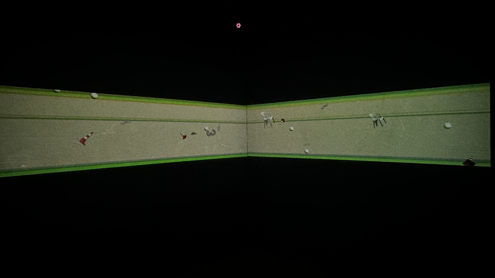
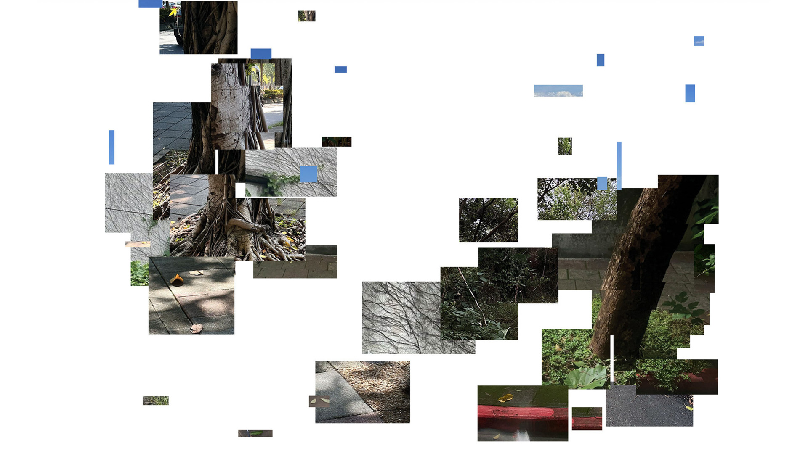
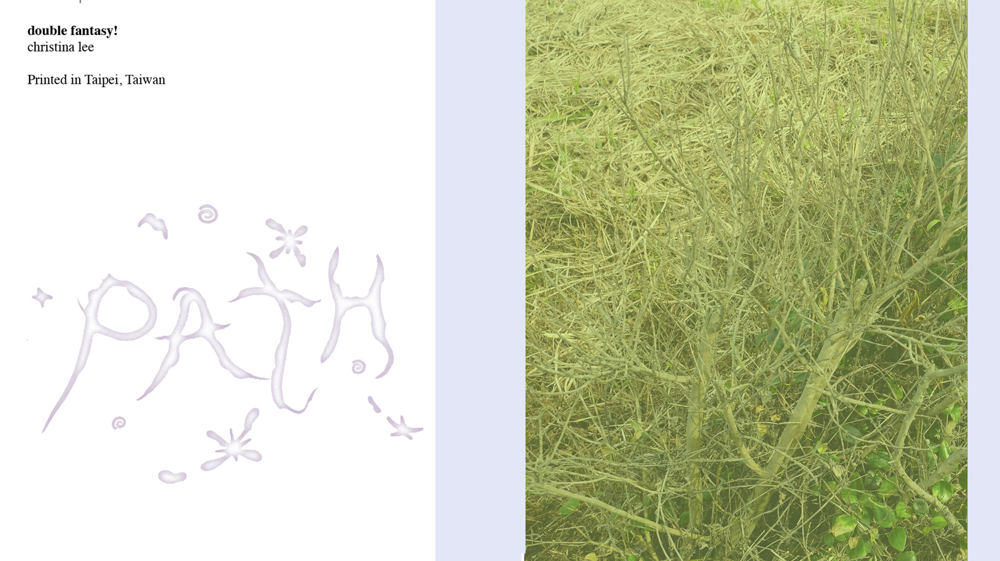
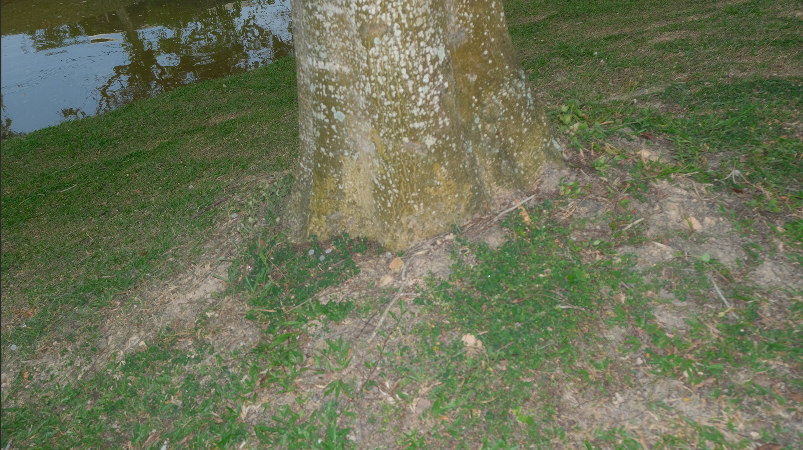
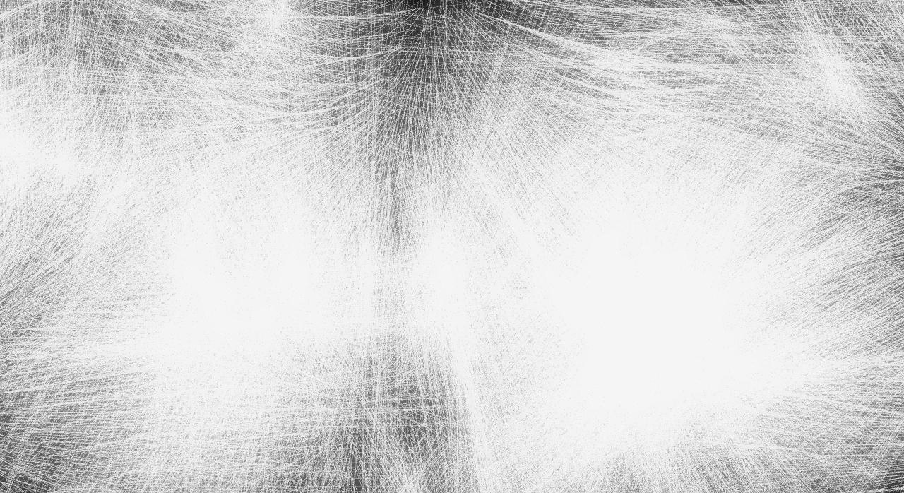
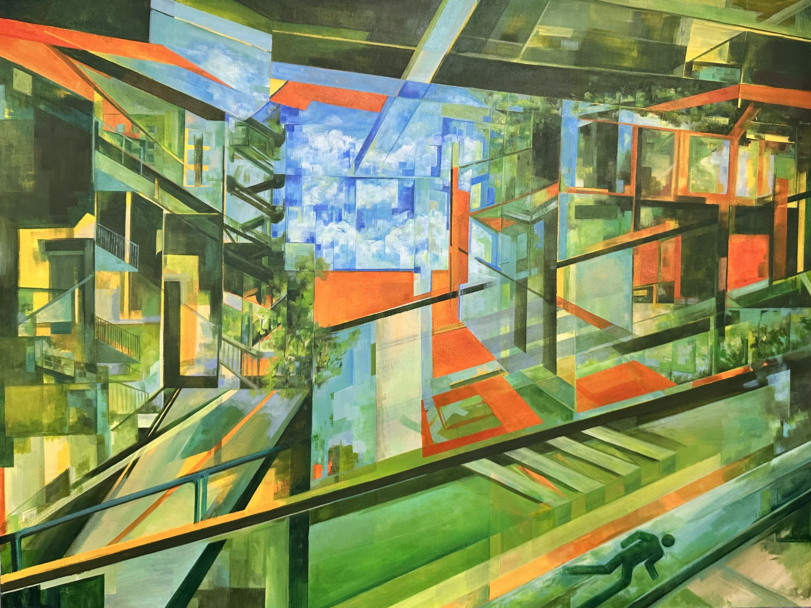
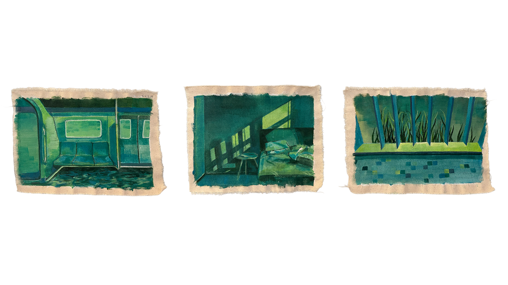
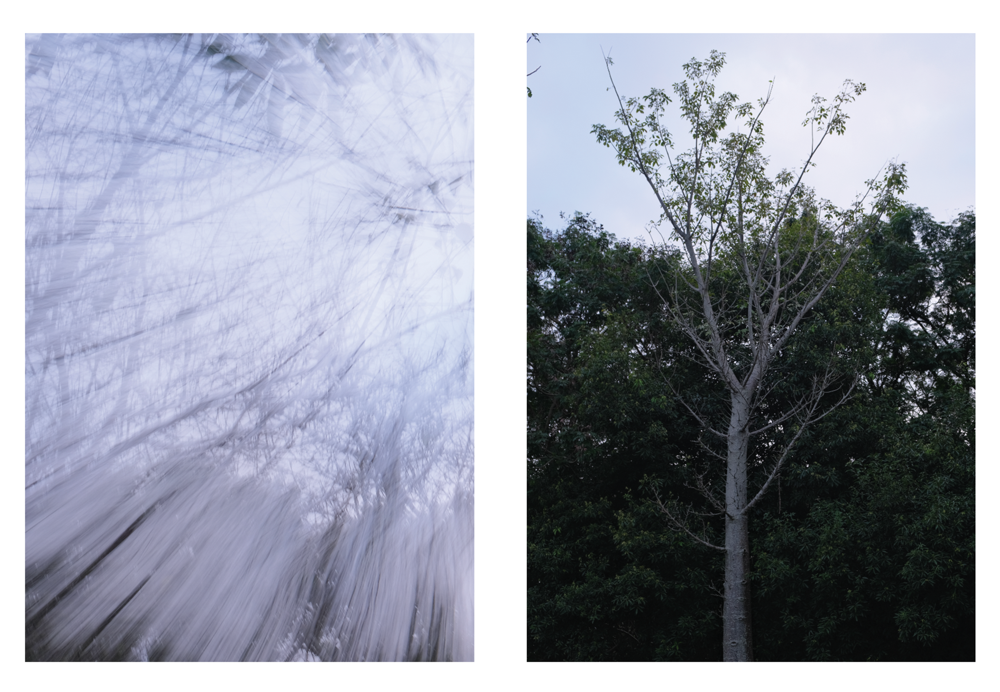

Selected Artworks










Christina Lee (b. 2003, Sarawak) is a Malaysian multidisciplinary artist currently based between Malaysia and Taiwan. She is expanding her practice and exploring new possibilities within the field of new media arts in Taipei.
Drawing inspiration from everyday life, Christina examines the spaces, images, and environments that shape our perception of the world. Her practice is driven by a curiosity about the familiar and an interest in uncovering the subtle relationships between what is seen and what often goes unnoticed.
Through her work, she invites viewers to reconsider their surroundings and engage with the overlooked aspects of everyday experience.
“We observe where we stand.”
Working across painting, new media, and installation, Christina explores spatial boundaries, perception, and the relationship between individuals and their environments.







Drift explores the subtle disconnection between consciousness and the physical body in the course of everyday life. As familiar movements become automatic, our attention begins to wander, creating a state of being neither fully present nor entirely detached from our surroundings.
Moving between public spaces and the intimacy of private environments, the work presents a gradual shift in perception, where familiar objects and environments begin to behave in unexpected ways. Objects appear to float, stretch, or take on unfamiliar forms, disrupting the ordinary logic of the spaces they inhabit.
These visual disturbances are not representations of literal weightlessness, but reflections of an altered state of awareness, suspended between control and uncertainty, presence and absence. Through these subtle disruptions, Drift considers how the familiar can momentarily become unfamiliar, revealing the instability of our everyday perceptions.
Rather than leading towards a fixed destination, drifting becomes a continuous process of detachment and return, where the boundary between the external world and internal consciousness remains fluid.


TAB(TPE) documents initial observations and spatial encounters experienced upon relocating to Taipei. The photobook compiles urban textures, transit moments, and fleeting architectural fragments gathered through daily exploration.
Serving as both an archive and a personal map, this first edition captures the rhythm of a new metropolis, balancing disorientation with discovery across its printed spreads.





Double Fantasy explores the overlapping thresholds between imagined narratives and lived reality. Through custom graphic layouts, poetic fragments, and visual spreads, the publication constructs an alternate space where everyday imagery is reframed.
The project questions the reliability of perception, examining how interior desires and external stimuli blur together into a unified visual essay.
This is the path one.
Haven think of a context for it yet..


This portrait series explores identity, quiet presence, and the nuances of human connection through photographic studies of Sato Wakana.
By focusing on natural light and unposed expressions, the work captures psychological depth and the delicate interplay between subject and surrounding space.


Behind-the-scenes documentation and visual direction from commercial production work with Red Bull. This project combined high-energy movement choreography with precision camera tracking and dynamic lighting design.
Balancing commercial requirements with artistic motion aesthetics, the shoot highlights fast-paced environmental action and vibrant color grading.